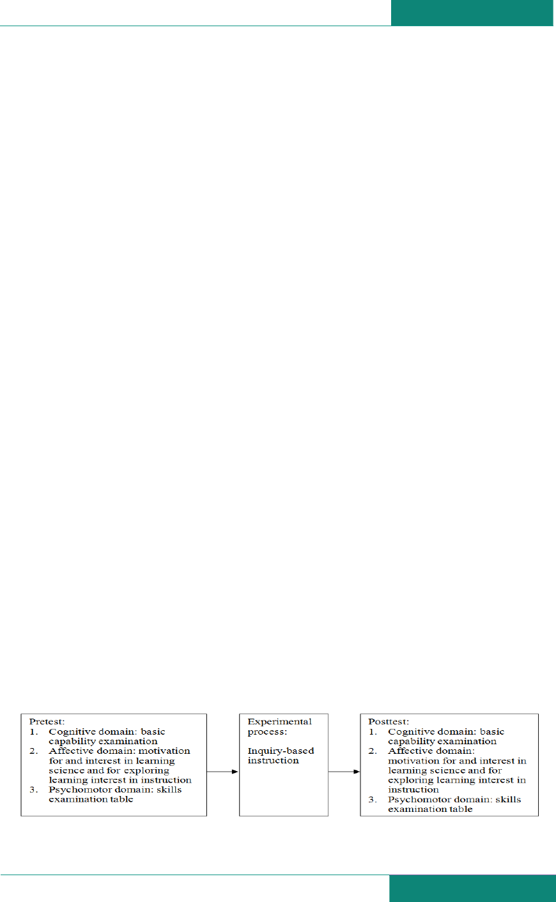
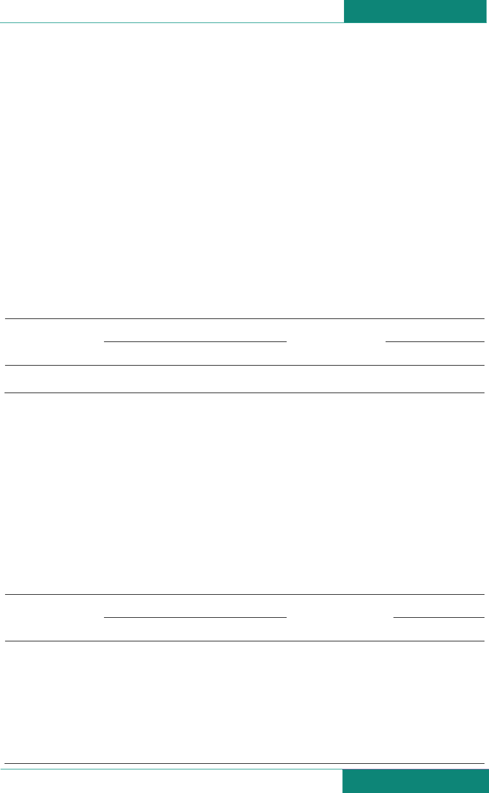

Educational Research International
Educational Research InternationalEducational Research International
Educational Research International
ISSN-L: 2307-3713, ISSN: 2307-3721
Vol. 2 No. 2
Vol. 2 No. 2Vol. 2 No. 2
Vol. 2 No. 2
October
OctoberOctober
October
2013
20132013
2013
Copyright © 2013 SAVAP International
www.savap.org.pk
www.erint.savap.org.pk
16
THE LEARNING EFFECTIVENESS OF INQUIRY-BASED
INSTRUCTION AMONG VOCATIONAL HIGH SCHOOL STUDENTS
Pi-Hsia Wang
1
, Yu-Ren Yen
2
, Hui-Ju Wu
3
, Pai-Lu Wu
4
1, 4
Center for Teacher Education, Cheng-Shiu University,
2
Department of Information Management, Far-East University, TAIWAN.
3
World Language and Secondary Education Department, University of South Florida, USA.
4
pailu@csu.edu.tw
ABSTRACT
This aim of this study was to explore the learning effectiveness of inquiry-based
instruction among vocational high school students. The sample consisted of 20
students at a maritime polytechnic vocational high school in southern Taiwan, and
the instruction focused on the laboratory practices for assembling and disassembling
power equipment. We used a single-group design and conducted pre- and posttests to
measure changes in basic capabilities, motivation for an interest in studying science,
and performance on a skill examination table.
The study results indicate that inquiry-based instruction significantly improved the
basic academic abilities and skills of students. This improvement was especially
pronounced with respect to the self-efficacy and performance goal dimensions related
to the motivation to study science. No significant differences were found for the three
dimensions related to interest in studying science attitude toward science, learning
atmosphere, and student engagement.
Keywords: Inquiry-based instruction, Science learning, learning effectiveness
INTRODUCTION
The rapid pace of technological and scientific advancement constitutes a megatrend that has
come to dominate the training of workers for and the very nature of various enterprises. In
this context, the educational aims of vocational education are not only to provide students
with those skills that are currently needed for participation in the production sectors but also
to train students to think so that they can succeed in the increasingly complex environments
and the multiplicity of trends in which many enterprises operate.
The Republic of China’s Ministry of Education issued the report “Reshaping Technological–
Vocational Education, Section II” providing policies to facilitate the use of vocational
education to help students acquire the skills required by various industries and to provide
workers for high-tech sectors. The report addresses the use of flexible curricula, selection by
substantial practices, the enhancement of pragmatic skills, and the reshaping of careers.
Furthermore, the National Science Council of the Republic of China also proposed the High
Scope Program in 2006 to help middle schools use newly developed technology to design
curricula and adopt inquiry-based instruction. It encouraged students’ self-motivated
problem-solving, curiosity about science, and motivation to learn, and it established a
learning model designed to facilitate student-initiated exploration and thinking.
The United States National Research Council (NRC) has already established inquiry-based
instruction as one of the teaching standards for science education. This approach is among the
most important methods adopted by science educators (Banerjee, 2010).
The learning activities involved in scientific exploration may benefit students by helping
them develop critical thinking skills and individual knowledge structures (Schneider, Krajcik,

Educational Research International
Educational Research InternationalEducational Research International
Educational Research International
ISSN-L: 2307-3713, ISSN: 2307-3721
Vol. 2 No. 2
Vol. 2 No. 2Vol. 2 No. 2
Vol. 2 No. 2
October
OctoberOctober
October
2013
20132013
2013
Copyright © 2013 SAVAP International
www.savap.org.pk
www.erint.savap.org.pk
17
Marx, & Soloway, 2002). Thus, inquiry-based instruction may help students understand how
to identify problems, autonomously seek answers, and develop and verify solutions. These
skills are so-called “portable capabilities,” a status that underscores their importance. The use
of “inquiry” to describe this approach refers to its reliance on an active learning process that
allows students to answer research questions via data analysis (Bell, Smetana, & Binns,
2005). Inquiry-based instruction is student oriented, although instructors may direct students
at appropriate times according to the requirements of the situation. Beginners may need more
instruction so that they can engage in the process of inquiry more effectively (Zangori,
Forbes, & Biggers, 2012). In regard to content, the NRC asserted that inquiry involves five
processes: hypothesizing, investigating, observing, interpreting, and evaluating (Banerjee,
2010). According to Wheeler and Bell (2012), inquiry involves a different set of five
processes related specifically to identifying a problem: collecting data, interpreting data,
developing alternative interpretations, presenting results, and verifying results. Additionally,
inquiry can be categorized into the following four types: (1) verification inquiry, where a set
of questions, approaches, and solutions is provided by instructors; (2) cascades of structure;
(3) guided inquiry, where instructors provide questions for further inquiry; and (4) open
inquiry. Moreover, Wheeler and Bell (2012) also noted the possible influence of certain
myths about inquiry-based instruction. One of these is that although this approach may be
helpful for students, it is difficult for instructors to implement. In fact, this method is
appropriate for science education at any level and for any grade.
Considerable research has been conducted on inquiry-based instruction. For example,
Gormally, Brickman, Hallar, and Armstrong (2011) implemented an inquiry-based
curriculum in a college biology laboratory classroom, and Marshall, Lotter, Smart, and Sirbu
(2011) performed a comparative analysis of two inquiry-based observational protocols to
better understand the quality of teacher-facilitated inquiry-based instruction. Additionally,
Marshall and Horton (2011) explored the relationship between inquiry-based instruction and
higher-order thinking in students. Moreover, Wang, Wang, Tai, and Chen investigated the
effectiveness of inquiry-based instruction among students with different levels of prior
knowledge and reading abilities. The present study was based on a call issued by the High
Scope Program of the National Science Council of the Republic of China to conduct
experiments in inquiry-based instruction teaching with the aim of understanding the learning
efficacy of inquiry-based instruction among vocational high school students, focusing
particularly on basic capabilities in specific subjects, motivation for and interest in studying
science, interest in inquiry-based instruction, and the ability to apply scientific skills to
specific subjects.
RESEARCH DESIGN AND IMPLEMENTATION
Research Design
This study used pretests and posttests administered to a single group, as shown in Figure 1.
Figure 1. Research design

Educational Research International
Educational Research InternationalEducational Research International
Educational Research International
ISSN-L: 2307-3713, ISSN: 2307-3721
Vol. 2 No. 2
Vol. 2 No. 2Vol. 2 No. 2
Vol. 2 No. 2
October
OctoberOctober
October
2013
20132013
2013
Copyright © 2013 SAVAP International
www.savap.org.pk
www.erint.savap.org.pk
18
Participants
The study sample, which was selected using purposive sampling, consisted of third-year
students in two classes at a vocational school in southern Taiwan. Of the 72 students in the
two classes, the 20 attending the course on laboratory practices for disassembling and
assembling power equipment (hereafter, “Power Operation course”) from September to
December in 2012 were chosen to participate in this study.
Description of Instruction
The Power Operation course examined in this study was primarily focused on laboratory
practices. The pedagogical process underpinning inquiry-based instruction includes sections
emphasizing motivation, instruction, collective lab practices, group lab practices, inspiration,
and review questions posed by students, additional practices, verification, and interpretation.
For example, the instructor in the Power Operation course attempted to increase students’
motivation by asking questions such as “Why can’t the engine be disassembled?” and “Why
can’t the engine be assembled?” and so on.
Research Instruments
The following four research instruments were employed in this study:
Cognitive domain: Basic capabilities
The examination in this domain included 10 multiple-choice questions and five inquiry-based
questions based on the theories presented in the “two-way specification table.” It tested three
cognitive “layers” that were addressed in the course: theory, operation, and application. It
subsequently posed questions about subtopics within these three layers.
Affective domain: Motivation for and interest in learning science
The questionnaire used to examine this domain was based on the Learning Motivation Scale
for Elementary School Nature and Life Technology Courses and the Questionnaire on
Learning Interest for Elementary School Science Courses developed by Wu (2007), both of
which have excellent validity and effectiveness. The motivation tool includes five
dimensions: self-efficacy orientation, learning-goal orientation, performance-goal orientation,
value orientation, and learning participation; these dimensions have also shown excellent
validity and effectiveness. These questionnaires used a five-point Likert scale, and higher
scores reflect more motivation for or interest in learning science.
Psychomotor domain
As this study was specifically designed to measure skills, we used self-edited skill
examination tables involving four tasks: replacing an engine, replacing a continuously
variable automatic transmission mechanism, replacing tubeless tires, and replacing disc brake
pads (shoe linings).
Domain context
This study was conducted at one of four maritime affairs vocational school in Taiwan; the
school used in the study is located in southern Taiwan. This study was designed to support
the High Scope Program promoted by the National Science Council of the Republic of China,
which emphasizes the integration of new scientific and technological developments into
school curricula and teaching as part of its mission. Schools participating in the High Scope
Program must formulate innovative instructional programs for newly developed technologies
and employ inquiry-based instruction to conduct a three-stage program including a trial of the
instructional approach, an experiment to test its effectiveness, and appropriate modifications

Educational Research International
Educational Research InternationalEducational Research International
Educational Research International
ISSN-L: 2307-3713, ISSN: 2307-3721
Vol. 2 No. 2
Vol. 2 No. 2Vol. 2 No. 2
Vol. 2 No. 2
October
OctoberOctober
October
2013
20132013
2013
Copyright © 2013 SAVAP International
www.savap.org.pk
www.erint.savap.org.pk
19
of the approach. The results of this experiment may be applied to other maritime affairs
vocational schools. The main purpose of inquiry-based instruction is to develop students’
ability to formulate questions, actively explore, and solve problems.
Data analysis
All data collected for this study were analyzed with a commercially available SPSS program.
The statistical analyses included descriptive statistics, means, standard deviations, and t-tests.
RESULTS
Cognitive Domain
Table 1 presents the results of the basic capability pretest and posttest for the Power
Operation course. Table 1 shows that the mean score significantly improved, from 23 to 96.6,
between the pretest and the posttest. We used a t-test to examine whether inquiry-based
instruction had a significant effect on students’ cognitive ability, and results reflected a
significant (t ＝ -50.88, p < .001) improvement in the cognitive ability of students after the
inquiry-based instruction.
Table 1. Results of Basic Capability Pretest and Posttest among Vocational School Students in
the Power Operation Course (N = 20)
Pretest (n = 20) Posttest (n = 20)
t p
95%CI
M SD M SD LL UL
Basic Capability
Examination
23.00 5.93 96.50 4.01 -50.88 P < .001 -76.52 -70.48
Affective Domain (Motivation to Learn Science)
Table 2 presents the pretest and posttest results regarding vocational students’ motivation to
learn science. Table 2 shows that the mean self-efficacy score on the pretest was 3.68 and that
on the posttest was 4.17. The mean pretest and posttest scores for learning-goal orientation
were 4.03 and 4.25, respectively, and those for performance-goal orientation were 3.29 and
3.76, respectively. The mean pretest score for value orientation was 4.27, and the mean
posttest score was 4.33. Across these dimensions, posttest scores were consistently higher
than pretest scores. Additionally, the mean pretest score for test anxiety was 3.41 and that for
the posttest was 3.33, indicating that test anxiety was decreased after inquiry-based
instruction.
Table 2. Results of Pretest and Posttest regarding Motivation to Learn Science among
Vocational School Students in the Power Operation Course (N = 20)
Motivation To
Learn Science
Pretest (n = 20) Posttest (n = 20)
t-value P-value
95%CI
M SD M SD LL UL
Self-efficacy 3.68 .58 4.17 .54 -3.72** p < .01 -.77 -.22
Learning-goal
orientation
4.03 .56 4.25 .56 -1.39 p > .05 -.56 .11
Performance
-
goal
orientation
3.29 .33 3.76 .67 -2.98** p < .01 -.79 -.14
Value orientation 4.27 .49 4.33 .54 -.51 p >. 05 -.31 .189
Test anxiety 3.41 .47 3.33 .57 .50 p >. 05 -.25 .41
Educational Research International
Educational Research InternationalEducational Research International
Educational Research International
ISSN-L: 2307-3713, ISSN: 2307-3721
Vol. 2 No. 2
Vol. 2 No. 2Vol. 2 No. 2
Vol. 2 No. 2
October
OctoberOctober
October
2013
20132013
2013
Copyright © 2013 SAVAP International
www.savap.org.pk
www.erint.savap.org.pk
20
We used pairwise t-tests to determine whether inquiry-based learning had a significant effect
on various aspects of the motivation to learn science among students attending the Power
Operation course. The data presented in Table 2 reflect significant differences between
pretest and posttest scores for self-efficacy (t = -3.72, p < .01) and performance-goal
orientation (t = -2.98, p < .01). No significant differences between pre-test and posttest scores
were observed for learning-goal orientation (t = -1.39, p > .05), value orientation (t = -.51, p
> .05), or test anxiety (t = -.50, p > .05).
Affective Domain (Interest in Learning Science)
Table 3 presents the results of the pretest and posttest regarding interest in learning science.
The mean score for attitude toward science on the pretest was 2.69 and that on the posttest
was 3.89. The mean pretest and posttest scores for learning atmosphere were 3.20 and 4.05,
and those for commitment to learning were 3.34 and 3.94, respectively. The mean pretest
score for participation was 3.59, and that on the posttest was 3.76. Thus, the posttest scores
were consistently higher than those on the pretest. Furthermore, the decrease in the mean
scores for learning difficulty from 3.22 on the pretest to 2.28 on the posttest shows that the
perceived difficulty of learning decreased after inquiry-based instruction.
We used pair wise t-tests to determine whether inquiry-based learning affected various
aspects of students’ interest in learning science. Table 3 shows a significant difference
between pretest and posttest scores for attitude toward science (t = -6.39, p < .001),
commitment to learning (t = -4.51, p < .001), and difficulty of learning (t = 5.68, p < .001).
No significant differences between students’ pretest and posttest scores were found for
learning atmosphere (t = -6.36, p < .001) or participation in learning (t = -.49, p > .05).
Table 3. Results of Pretest and Posttest regarding Interest in Learning Science among
Vocational School Students in the Power Operation Course (N = 20)
Interest In
Learning Science
Pretest (n = 20) Posttest (n = 20)
t p
95%CI
M SD M SD LL UL
Attitude toward
science
2.69 .434 3.89 .55 -6.39***
p < .001 -1.59 -.81
Learning
atmosphere
3.20 .260 4.05 .67 -6.36***
p < .001 -1.13 -.57
Difficulty of
learning
3.22 .282 2.28 .62 5.68*** p < .001 .59 1.29
Commitment to
learning
3.34 .284 3.94 .63 -4.51***
p < .001 -.88 -.32
Participation in
learning
3.59 1.27 3.76 .58 -.49 p > .05 -.90 .56
Skills Domain
Table 4 presents the pretest and posttest results related to students’ skills. The data reveal a
significant improvement between the pretest (M = 26.24) and posttest (M = 94.53). The
results of a t-test examining whether inquiry-based instruction improved students’ skills
showed a significant change (t＝-84.82, p < .001) between the pre- and posttests, indicating
that inquiry-based instruction had a significantly positively effect on students’ skills.
Educational Research International
Educational Research InternationalEducational Research International
Educational Research International
ISSN-L: 2307-3713, ISSN: 2307-3721
Vol. 2 No. 2
Vol. 2 No. 2Vol. 2 No. 2
Vol. 2 No. 2
October
OctoberOctober
October
2013
20132013
2013
Copyright © 2013 SAVAP International
www.savap.org.pk
www.erint.savap.org.pk
21
Table 4. Results of Skills Pretest and Posttest among Vocational School Students in the Power
Operation Course (N = 20)
Pretest (n = 20) Posttest (n = 20)
t p
95%CI
M SD M SD LL UL
Skills
Examination
26.24 3.59 94.53 2.40 -84.82
***
p < .001 -69.97 -66.60
DISCUSSION
This study confirmed that inquiry-based instruction can significantly improve students’
cognitive ability and skills. In addition to the direct influence of inquiry-based instruction, we
found improvement related to the use of a two-way specification table by teaching staff, who
employed this tool to develop questions for the basic ability examination. Thus, assisting
instructors with their pedagogical approaches and assessment techniques can indirectly lead
to significant improvements in student performance.
The comparison of pre-test and posttest scores for self-efficacy, learning-goal orientation, and
performance-goal orientation reflected considerable enhancement of students’ motivation to
learn science. The data also showed that students experiencing difficulty with learning could
be helped by inquiry-based instruction. Moreover, given that self-efficacy is strongly
associated with self-confidence related to learning science, it is likely that inquiry-based
instruction encourages students to adopt different approaches in the service of developing a
better understanding of the subject, helps students familiarize themselves with ongoing
experiments and areas of inquiry, and enables them to obtain better scores on examinations.
In terms of “value orientation,” this study found no change in students “value orientation”
toward science, a construct related to students’ appreciation of the value of science learning.
This may have been caused by students’ lack of experience with inquiry-based instruction
and the longstanding tendency of vocational education to focus only on skills rather than on
the process of thinking. However, students in the Power Operation course changed
significantly with regard to their interest in learning science, as manifested by scores for
attitudes toward science, learning atmosphere, commitment to learning, and difficulty with
learning. These data reflect increased interest in and decreased difficulty with learning
science among students taking the Power Operation course.
We also found no significant differences in learning participation, which is consistent with
the results reported by Zangori, Forbes, and Biggers (2012). This may be attributed to the
relatively short duration of the teaching period in this study. Additionally, students in this
study were in the initial stage of learning. Moreover, the teaching environment in Taiwan
may emphasize a linear conception of progress and the use of examinations to advance in
school. This creates a culture in which students must focus on receiving what is taught by the
faculty at the expense of asking questions. All of these factors may lead to significantly less
participation in learning.
CONCLUSION
This study aimed to explore the impact of inquiry-based instruction on the learning efficacy
of vocational school students. We found that inquiry-based instruction can help students
significantly improve their cognitive ability. Moreover, students’ motivation to learn science,
reflected in scores for self-efficacy, learning-goal orientation, performance-goal orientation,
and value orientation, improved significantly after the Power Operation course. The level of
anxiety experienced by students was also reduced after the course, and significant

Educational Research International
Educational Research InternationalEducational Research International
Educational Research International
ISSN-L: 2307-3713, ISSN: 2307-3721
Vol. 2 No. 2
Vol. 2 No. 2Vol. 2 No. 2
Vol. 2 No. 2
October
OctoberOctober
October
2013
20132013
2013
Copyright © 2013 SAVAP International
www.savap.org.pk
www.erint.savap.org.pk
22
improvements were observed with regard to self-efficacy and performance-goal orientation.
In terms of interest in learning science, significant improvements were found in attitude
toward science, learning atmosphere, and commitment to learning after the Power Operation
course. Moreover, perception of the difficulty of learning also decreased significantly. These
results demonstrate that inquiry-based instruction can enhance students’ interest in learning
science. Moreover, students’ skills can also be considerably improved by inquiry-based
instruction.
Based on the aforementioned conclusions, we recommend that the faculty of vocational
schools in Taiwan learn and employ inquiry-based instruction to enhance students’
motivation for and interest in learning. However, our results should be interpreted in the
context of the following limitations. First, we suggest that future research use both
experimental and control groups to compare the results of inquiry-based and non-inquiry-
based instruction. Furthermore, as this study used a quantitative approach, future research
should include qualitative interviews to increase our understanding of the influence of
inquiry-based instruction on students’ learning process.
ACKNOWLEDGEMENTS
The authors thank the National Science Council of the Republic of China for funding this
research（NSC 101-2514-S-022 -001. We also give our sincere thanks to the article’s
reviewers for their constructive suggestions.

Educational Research International
Educational Research InternationalEducational Research International
Educational Research International
ISSN-L: 2307-3713, ISSN: 2307-3721
Vol. 2 No. 2
Vol. 2 No. 2Vol. 2 No. 2
Vol. 2 No. 2
October
OctoberOctober
October
2013
20132013
2013
Copyright © 2013 SAVAP International
www.savap.org.pk
www.erint.savap.org.pk
23
REFERENCES
[1] Banerjee, A. (2010). Teaching science using guided inquiry as the central theme: A
Professional development model for high school science teachers. Science Educator,
19(2), 1-9.
[2] Bell, R. L., Smetana, L. & Binns, I. (2005). Simplifying inquiry instruction: Assessing
the inquiry level of classroom activities. The Science Teacher, 72(7), 30-33.
[3] Gormally, C., Brickman, P., Hallar, B. & Armstrong N. (2011). Lessons learned about
implementing an inquiry-based curriculum in a college biology laboratory classroom.
Journal of College Science Teaching, 40(3), 45-51.
[4] Lo Wen-Ching (2009). The development and evaluation of the inquiry-based
instruction interest questionnaire. Thesis, Graduate Institute of Science Education,
National Changhua University of Education, ChangHua, Taiwan.
[5] Ministry of Education, Taiwan. (2013). Reshaping Technological-Vocational
Education, Section II. Taipei.
[6] Marshall, J. C. & Horton, R. M. (2011). The relationship of teacher-facilitated, inquiry-
based instruction to student higher-order thinking. School Science and Mathematics,
111(3), 93-101.
[7] Marshall, J. C., Lotter, C., Smart, J. & Sirbu, C. (2011). Comparative analysis of two
inquiry observational protocols: Striving to better understand the quality of teacher-
facilitated inquiry-based instruction. School Science and Mathematics, 111(6), 306-
315.
[8] National Science Council, Taiwan. (2013). Retrieved August 9, 2013, from
http://w1.ceels.org/highscope/web/modules/tinyd0/
[9] Schneider, R. M., Krajcik, J. Marx, R. W. & Soloway E. (2005). Performance of
students in project-based science classrooms on a national measure of science
achievement. Journal of Research in Science Teaching, 39(5), 410–422.
[10] Schunk, D. H. (2013). Motivation in education: theory, research, and applications.
Boston: Pearson.
[11] Wang Jing-Ru, Wang Yuh-Chao, Tai Hsin-Jung and Chen Wen-Ju (2010).
Investigating the effectiveness of inquiry-based instruction on students with different
prior knowledge and reading abilities. International Journal of Science and
Mathematics Education, 8, 801-820.
[12] Wheeler, L. & Bell, R. (2012). Open-Ended Inquiry, Science Teacher, 79(6), p32-39.
[13] Wu Shih-Hsun (2007). A study of the Han nationality students and the aboriginal
students on their learning motives and learning interests in the science course. Thesis,
Graduate Institute of Mathematics and Science Education, National Pingtung
University of Education, PingTung, Taiwan.
[14] Zangori, L., Forbes, C. & Biggers, M. (2012). This is inquiry ... right? Strategies for
effectively adapting elementary science lessons. Science and Children, 50(1), 48-53.